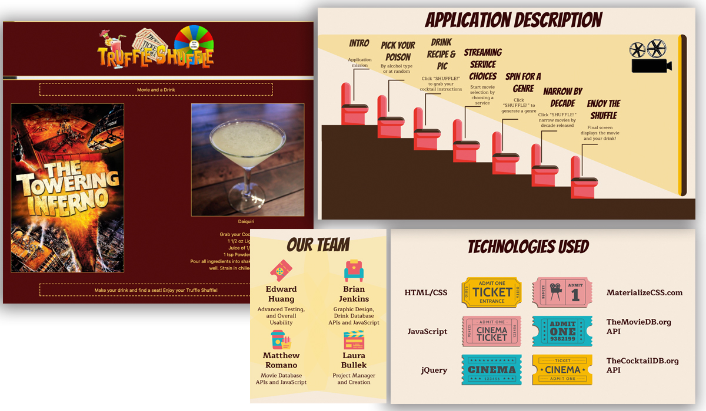
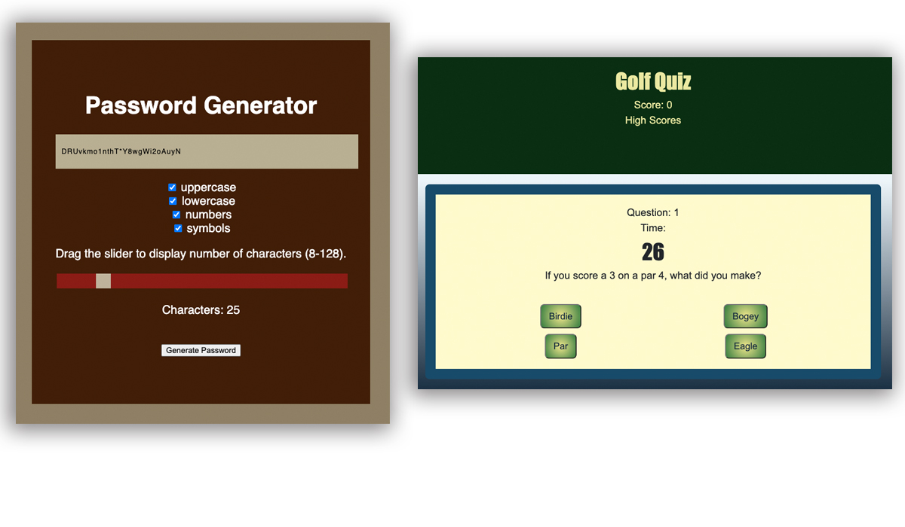
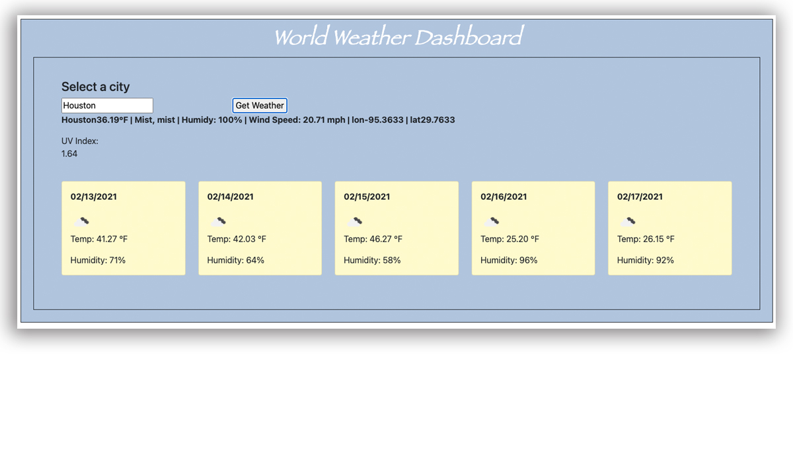

            <!-- Indicators -->
            <!-- <ol class="carousel-indicators">
                <li data-target="#myslider" data-slide-to="0" class="active"></li>
                <li data-target="#myslider" data-slide-to="1"></li>
                <li data-target="#myslider" data-slide-to="2"></li>
            </ol>  -->

            <!-- Wrapper for slides-->
            <!-- <div class="carousel-inner">
                <div class="carousel-item active">
                    
                </div>
                    <div class="carousel-item">
                        
                    </div>
                    <div class="carousel-item">
                        
                    </div>
                </div>
<!--  -->
<button class="carousel-control-prev" type="button" data-bs-target="#myslider"  data-bs-slide="prev">
    <span class="carousel-control-prev-icon" aria-hidden="true"></span>
    <span class="visually-hidden">Previous</span>
  </button>
  <button class="carousel-control-next" type="button" data-bs-target="#myslider"  data-bs-slide="next">
    <span class="carousel-control-next-icon" aria-hidden="true"></span>
    <span class="visually-hidden">Next</span>
  </button>
</div> -->

<!-- Left and right controls -->
<!-- <a class="left carousel-control" href="#myslider" data-slide="prev">
<span class="glyphicon glyphicon-chevron-left"></span>
<span class="sr-only">Previous</span>
</a>

<a class="right carousel-control" href="#myslider" data-slide="next">
<span class="glyphicon glyphicon-chevron-right"></span>
<span class="sr-only">Next</span>
</a>
</div> -->